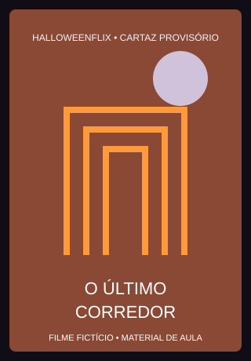
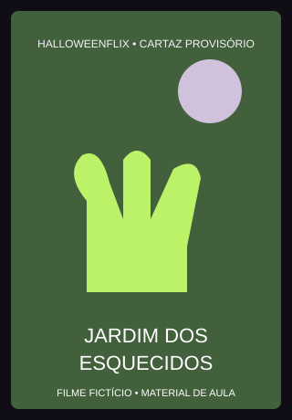
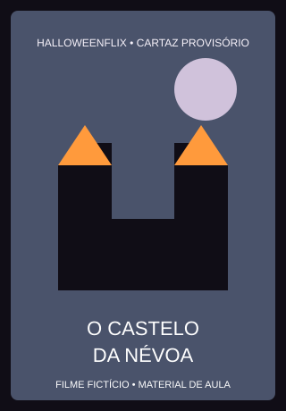

Detalhes dos filmes
Conheça as histórias, os gêneros e as classificações fictícias do catálogo.

A Casa das Sombras
Ano: 2024
Duração: 1h 42min
Gênero: Sobrenatural
Classificação fictícia: 14 anos
Sinopse
Ao visitar uma antiga casa de família, Lia percebe que os relógios param sempre à meia-noite. Com a ajuda do irmão, ela investiga os ruídos e descobre um segredo escondido atrás de uma parede.

O Último Corredor
Ano: 2023 | Duração: 1h 35min
Gênero: Terror psicológico | Classificação fictícia: 16 anos
Sinopse
Depois de acordar em um prédio vazio, Caio tenta encontrar a saída de um corredor que parece mudar a cada volta. Cada porta revela uma lembrança que ele preferia esquecer.

A Máscara da Meia-Noite
Ano: 2025 | Duração: 1h 28min
Gênero: Slasher | Classificação fictícia: 16 anos
Sinopse
Na noite de uma festa à fantasia, uma máscara antiga desaparece de uma exposição. Quando as luzes se apagam, os convidados percebem que alguém está usando a máscara para assustá-los.

O Jardim dos Esquecidos
Ano: 2022 | Duração: 1h 40min
Gênero: Suspense sobrenatural | Classificação fictícia: 12 anos
Sinopse
Durante uma caminhada, três amigos encontram um jardim que não aparece em nenhum mapa. Ao sair de lá, cada um percebe que se esqueceu de algo importante.

O Castelo da Névoa
Ano: 1986 | Duração: 1h 51min
Gênero: Clássicos do terror | Classificação fictícia: 12 anos
Sinopse
Uma viajante busca abrigo em um castelo cercado por neblina. Pela manhã, o caminho desaparece e os moradores parecem não se lembrar de como chegaram ali.
Aluguel de brincadeira
Este projeto não faz cobranças nem reproduz filmes.